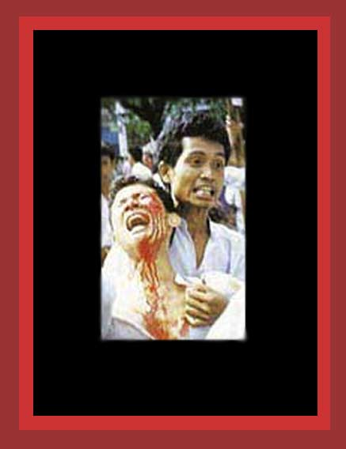

| The people of burma currently live under a repressive military dictatorship. It is committing extensive democide and genocide, forces its people to do unpaid labor on government projects and dangerous military portering, and has massacred thousands of peaceful prodemocracy demonstrators. Here is a photo of a mortally wounded student shot by the soldiers during a prodemocracy demonstration. For documentation on this repression, see Chapter 1 of Saving Lives, Enriching Life. Source: unknown. |